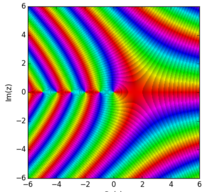
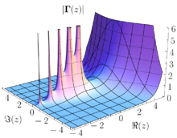

El factorial de un múmero positivo n o dicho de otra forma n factorial se define en principio como el producto de todos los enteros positivos desde uno (es decir, los números naturales) hasta n.

Cero Factorial
El factorial de 0 puede ser confuso a priori pero hay buenas razones para definirlo como uno, una de ellas es por la propia definición de factorial, pues gracias a una propiedad de recusrsividad que tiene la función factorial se puede establecer que 0 factorial es igual a uno, la propiedad es la siguiente:
Para cada número entero positivo n mayor o igual que uno, es posible determinar el valor del factorial anterior mediante el uso de la siguiente identidad:
Si aplicamos la misma regla para el caso en que n = 1 tendríamos que 0! corresponde a:
Extención de la Función Factorial
La definición indicada anteriormente de factorial es válida para números no negativos. Es posible extender la definición a otros contextos introduciendo conceptos más sofisticados, en especial es posible definirla para cualquier número real excepto para los números enteros negativos y para cualquier número complejo exceptuando de nuevo los números enteros negativos. El factorial de n es generalizado para cualquier número real n por la función gamma que se define de la siguiente manera:
Solo para n > 0. Se puede generalizar aún más, para todo número complejo z que no sea igual a un entero no positivo, mediante la siguiente definición:
Graficas de la Función Gamma en el plano de los números complejos
-

La función Gamma en el plano complejo
-

Módulo de la función Gamma en el plano complejo
Factorial de un número natural.
En esta sección podra calcular el factorial de un número entero positivo o el 0.